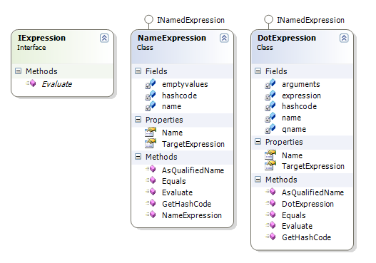
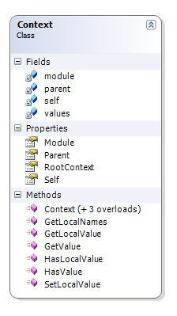
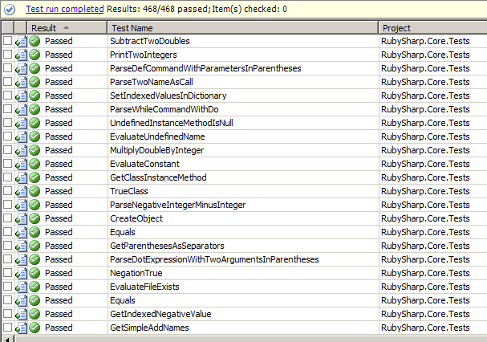

Ruby
A dynamic language
- Smalltalk Influence
- Also Python, Perl, Lisp, ...
- Dynamic Type System
- Memory Management
Only one Ruby?
- Ruby
- JRuby
- IronRuby
- Rubinius
- MacRuby
- HotRuby
- mruby
- ...
Interpreters
The easy approach
How Do Interpreters Work?
- Read some source code
- Build an AST (Abstract Syntax Tree) by parsing the source code
- Evaluate the program by walking over the AST and performing instructions
Compilers for free
## AST
```ruby
x = 2; y = x * 3
```

MRI
- Matz's Ruby Interpreter
- Also called CRuby
- de facto reference
How Do Compilers Work?
- Read some source code
- Build an AST by parsing the source code
- Generate target code by walking the AST and emitting instructions
Compilers for free
## Virtual Machine, Bytecodes
```js
x = 2; y = x * 3
```

YARV
- YARV (Yet another Ruby VM)
- The official Ruby implementation for Ruby 1.9
Rubinius
http://rubini.us/
- Designed for concurrency
- Native threads to run Ruby code on all the CPU cores
- LLVM-based just-in-time (JIT) native machine code compiler
An Implementation
Ruby in C#
Challenges
- Modules and Classes
- Class Hierarchy
- Namespaces
- Singleton Classes
- Garbage Collector
- Load .Dlls
Everything is a Value

To be evaluated in Context

Test-Driven Development
Put your money where your mouth is!

The End
BY Angel 'Java' Lopez / www.ajlopez.com / @ajlopez